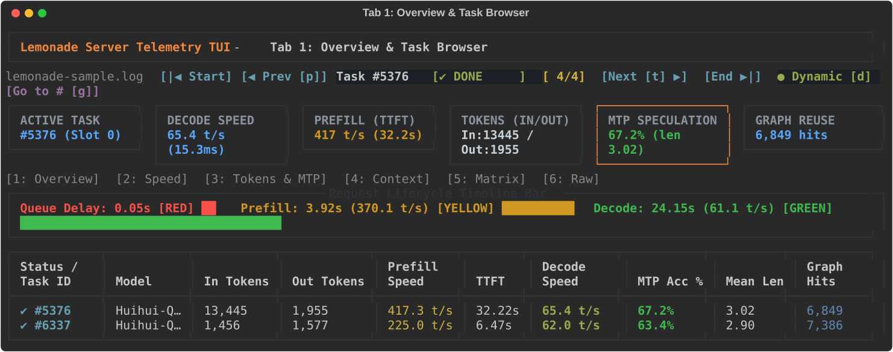
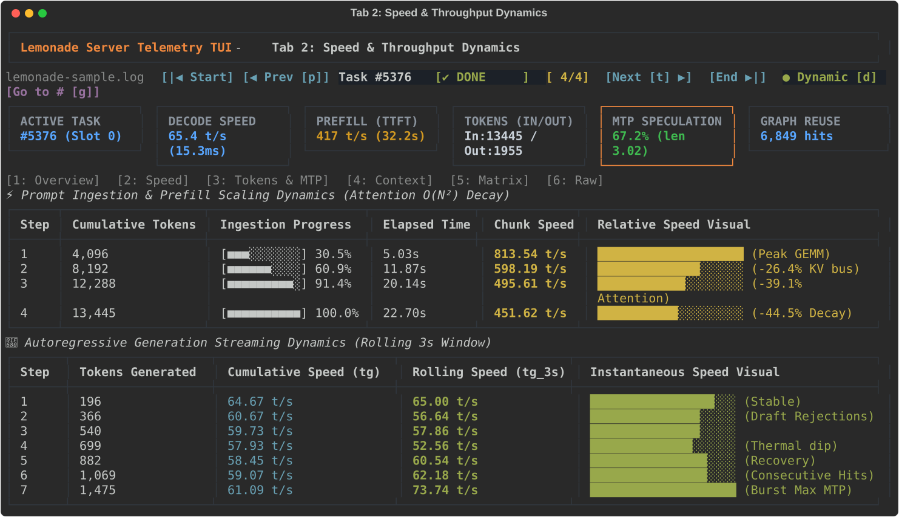
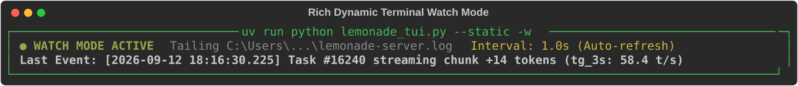
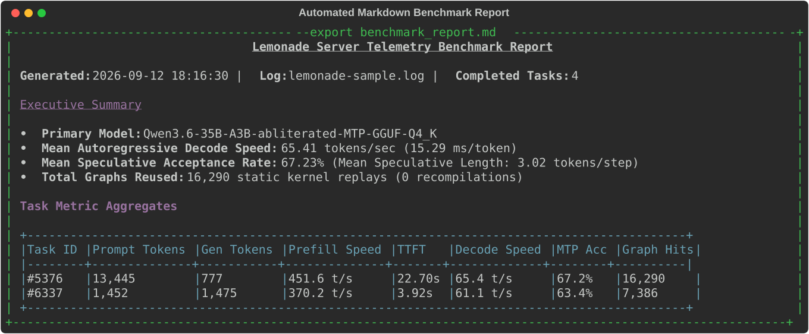
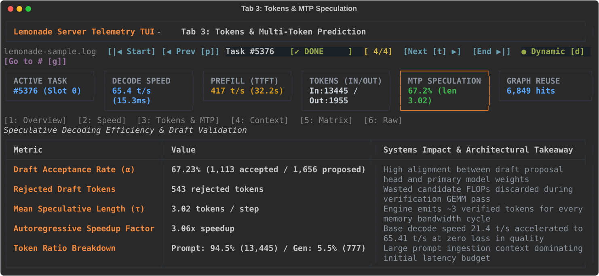
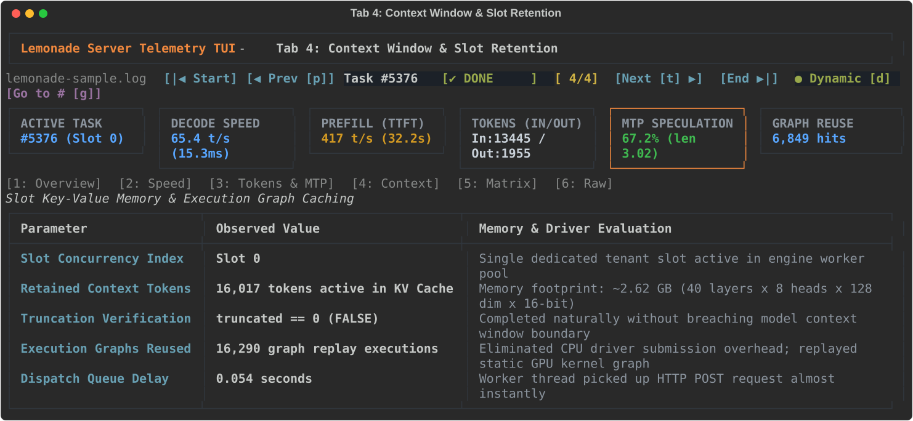
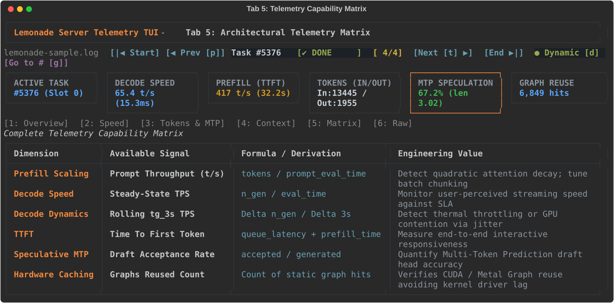
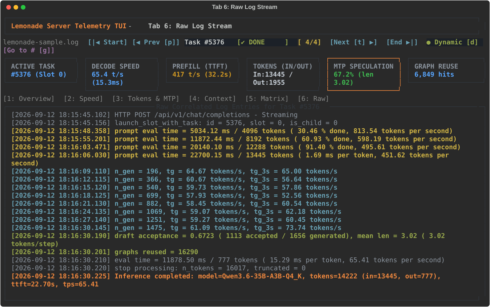
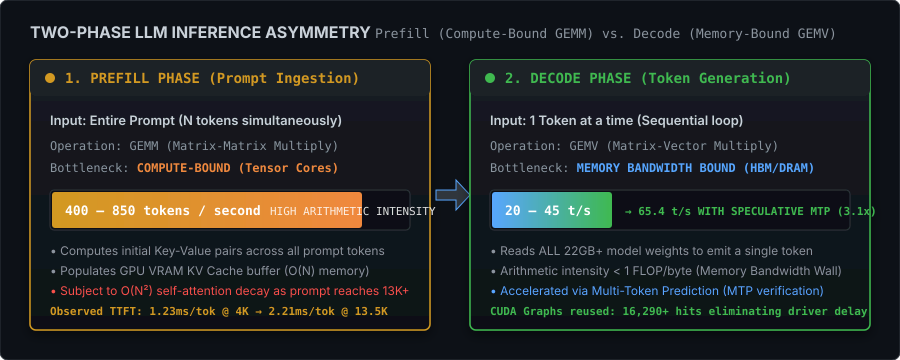
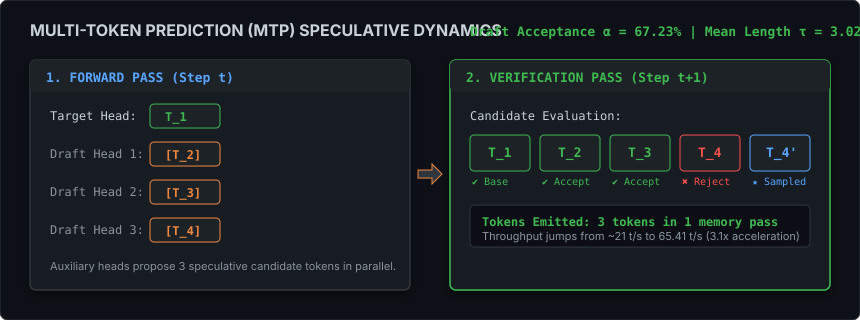

Inspect autoregressive decode throughput, multi-token speculative prediction (MTP) acceleration, prefill attention scaling slowdown, and KV cache allocation directly in your terminal. Zero overhead, stateful incremental log ingestion, and rock-solid layout stabilization.
Test interactive keyboard navigation directly in your browser. Press t / p to cycle tasks, 1-6 to switch diagnostic tabs, and d to toggle live streaming mode.
| Status / Task ID | Model | Inbound | Generated | Prefill Speed | TTFT | Decode Speed | MTP Acc % | Mean Len |
|---|---|---|---|---|---|---|---|---|
| ✔ #5376 | Qwen3.6-35B-A3B-Q4_K | 13,445 | 777 | 451.6 t/s | 22.70s | 65.4 t/s | 67.2% | 3.02 |
| ✔ #6337 | Qwen3.6-35B-A3B-Q4_K | 1,452 | 1,475 | 370.2 t/s | 3.92s | 61.1 t/s | 63.4% | 2.90 |
| ⚡ #16240 | Qwen3.6-35B-A3B-Q4_K | 2,048 | 142* | 497.1 t/s | 4.12s | 58.4 t/s | 59.4% | 2.82 |
| ✖ #0 | Qwen3.6-35B-A3B-Q4_K | 128 | 0 | N/A | N/A | Aborted | N/A | N/A |
| Context Boundary | Cumulative Tokens | Ingestion Speed | Latency / Token | Scaling Visual |
|---|---|---|---|---|
| Step 1 (0 → 4K) | 4,096 | 813.54 t/s | 1.23 ms/tok | ████████████████████ (Peak GEMM saturation) |
| Step 2 (4K → 8K) | 8,192 | 598.19 t/s | 1.67 ms/tok | ██████████████░░░░░░ (-26.4% KV cache traffic) |
| Step 3 (8K → 12K) | 12,288 | 495.61 t/s | 2.02 ms/tok | ████████████░░░░░░░░ (-39.1% Self-Attention) |
| Step 4 (12K → 13.5K) | 13,445 | 451.62 t/s | 2.21 ms/tok | ███████████░░░░░░░░░ (-44.5% Context Decay) |
| Retained KV Cache Tokens | 16,017 tokens | ~2.62 GB allocated in VRAM for instant subsequent prompt turn |
| Context Truncation Status | truncated == 0 | Request completed within context window limit (No output clipping) |
| CUDA Execution Graphs Reused | 16,290 hits | Eliminated CPU driver submission delays; replayed pre-compiled GPU graph |
| Dispatch Queue Scheduling Delay | 0.054s | Worker thread immediately picked up HTTP request without backlog delay |
| Signal Dimension | Metric Name | Derivation Formula | Systems Value |
|---|---|---|---|
| Prefill Scaling | Prompt Throughput (t/s) | tokens / prompt_eval_time |
Detect quadratic attention decay; tune batch chunking |
| Decode Speed | Steady-State TPS | n_gen / eval_time |
Monitor user-perceived streaming speed against SLA |
| Speculative MTP | Draft Acceptance Rate | accepted / generated |
Quantify Multi-Token Prediction draft head accuracy |
| Hardware Graph | Graphs Reused Count | graphs reused = N |
Verify static CUDA / Metal graph replay avoiding kernel driver lag |
Loading raw correlated records...
From live fullscreen interactive terminal navigation to lightweight headless CI/CD monitoring, Lemonade TUI adapts to your operational requirements with zero runtime bloat.
Rich, interactive Textual interface. Tail-follows active Lemonade Server logs in real time,
updating live chunk progress, rolling decode speed (tg_3s), and streaming step rows.
uv run python .\lemonade_tui.py

Pauses background polling timers entirely. Zero background file reads or CPU compute. Delivers ultra-crisp, 120 FPS debounced scrolling for reviewing historical benchmark sessions.
uv run python .\lemonade_tui.py --snapshot

Outputs directly into standard terminal stdout without taking over your terminal screen.
Supports single-shot summaries or live in-place auto-refreshing via --static -w.
uv run python .\lemonade_tui.py --static -w

Ingests server log files and exports comprehensive GitHub-Flavored Markdown reports complete with executive summaries, metric tables, prefill scaling decay curves, and MTP efficiency.
uv run python .\lemonade_tui.py --export report.md

Inspect every micro-dimension of model execution. From time-to-first-token breakdowns to speculative draft acceptance.
Three-phase visual timeline separating scheduling queue delay (Red), prefill prompt processing (Yellow), and autoregressive decode (Green).
Reveals prefill attention scaling slowdown chunk-by-chunk, plus autoregressive decode throughput
and instantaneous rolling 3-second speed (tg_3s).
Mathematical evaluation of Multi-Token Prediction draft acceptance rate (α), mean speculative length (τ), and effective autoregressive speedup factor.

Verifies slot KV cache memory retention across multi-turn sessions, confirms
truncation boundaries (truncated == 0), and counts static execution graph replays.

Exhaustive reference matrix explaining every metric captured by the parser, its mathematical derivation, and its engineering value in production.

Full forensic inspection of raw server records correlated with the selected task, with syntax highlighting across timestamps, HTTP methods, and token counts.

Understanding the hardware bottlenecks: Why prefill is compute-bound, decode is memory-bandwidth-bound, and how speculative decoding breaks through the memory wall.

Because standard multi-head self-attention scales quadratically with sequence length (≈ 4 · N² · d), prompt evaluation throughput slows down as prompts reach 13.5K tokens. Lemonade TUI isolates and measures this decay across progressive chunks.
TTFT = t_queue + t_prefill = t_queue + (N_prompt / Throughput_prefill)
| Context Window | Observed Speed | Latency / Token | Impact |
|---|---|---|---|
| 0 → 4,096 tok | 813.54 t/s | 1.23 ms | Peak Tensor Core saturation |
| 4,096 → 8,192 tok | 598.19 t/s | 1.67 ms | -26.4% memory traffic |
| 8,192 → 12,288 tok | 495.61 t/s | 2.02 ms | -39.1% self-attention ops |
| 12,288 → 13,445 tok | 451.62 t/s | 2.21 ms | -44.5% attention decay |
During classical autoregression, emitting one token requires transferring all 22 GB+ of model weights from VRAM to on-chip SRAM. MTP proposes multiple candidate tokens and validates them in a single verification pass, achieving 3.1x acceleration.

Generate tailored command invocations with one click.
uv run python .\lemonade_tui.py "$env:TEMP\lemonade-server.log"
| Argument | Flag / Type | Default | Description & Operational Impact |
|---|---|---|---|
logfile |
Positional | lemonade-sample.log |
Target log file. Auto-expands $env:TEMP, Unix $TEMP, and relative paths. |
--static |
Flag | False |
Renders Rich console dashboard to stdout without taking over terminal buffer. |
--dynamic / -w |
Flag | False |
Enables dynamic live tailing: auto-refreshes terminal dashboard or live TUI. |
--snapshot |
Flag | False |
Launches interactive TUI in static snapshot mode (polling paused; zero overhead). |
--task TASK_ID |
Integer | None |
Focuses directly on a specified task identifier on startup. |
--all |
Flag | False |
Renders all historical requests in static mode (defaults to latest 5). |
--export FILE |
String | None |
Exports high-depth Markdown telemetry report to disk and exits. |
Eliminating layout thrashing, coordinate jitter, and synthetic ConPTY event cascades.
All task IDs enforce TASK_ID_WIDTH = 6 with invariant 11-char status badges
(✔ DONE ) and a fixed 17-cell mode button, preventing centered navigation elements from shifting horizontally.
Holding Arrow Down cycles rows at 120 FPS. Expensive detail views only compute 60ms after cursor motion ceases, eliminating terminal lag on Windows terminals.
DataTable is bound to a dedicated height: 12 container, ending virtualized layout thrash
and isolating row culling from outer summary scroll containers.
The parser stores file byte offsets via f.tell() and f.seek(),
ingesting only newly appended bytes on subsequent poll cycles without re-reading the entire file.
Token updates modify only active cells in-place (<0.1ms per cycle) rather than wiping and rebuilding 170+ rows, guaranteeing zero flicker.
The 11,000-line log is scanned once during startup, slashing launch latency from ~950ms to ~180ms.